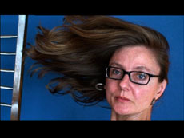

|
16:9 FULL HD
Marion Pfaus | D 2008 | 12 Min.
Material: HDV
Format: BetaSP
Originalsprache: Deutsch
Kamera: Marion Pfaus
Ton: Marion Pfaus
Schnitt: Marion Pfaus
Mit Marion Pfaus, Felicia Zeller
Produktion: Marion Pfaus
Vertrieb: Marion Pfaus
On-Video-Award Exground Wiesbaden 2008
www.rigoletti.de
16:9 Full HD ist ein HDV-Film im 16:9-Format. Deutschland hinkt beim Thema High Definition (HD) im Vergleich zu Großbritannien und anderen europäischen Ländern um 12 bis 14 Monate hinterher. Der Film untersucht, wie viel nach der Umstellung von PAL auf HD, also von einem 4:3- auf ein 16:9-Format an Bild gewonnen worden ist, und was man damit alles machen kann.
"Zwischen Avantgarde und Unterhaltung inszeniert sich Marion Pfaus in einer One-Woman-Show, die lustvoll und charmant die oft verhängnisvollen Möglichkeiten der Bildproduktion im Zeitalter der digitalen Massenverwertung reflektiert." (B.B.)
Marion Pfaus, geb. 1966 im Badischen, lebt seit 2000 in Berlin. Sie studierte an der Filmakademie Baden-Württemberg in Ludwigsburg und hat seitdem nicht nur Filme gedreht, sondern auch Texte veröffentlicht und mit interaktiven Medien gearbeitet. 2006 erschien ihr Roman "Aus den Memoiren einer Verblühenden".
Filme: In drei einfachen Schritten zum Meisterwerk 2002 | Videobrief an Rigoletti 2003 | Wir aus Baden-Württemberg 2004 | Learning English with Rigoletti 2004 | 16:9 Full HD 2007
zurück
|